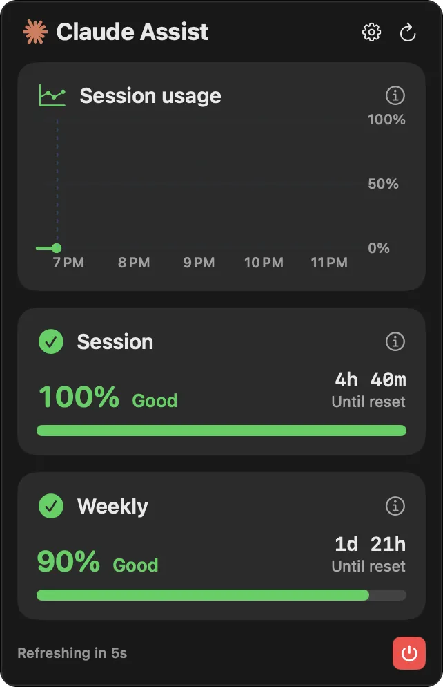
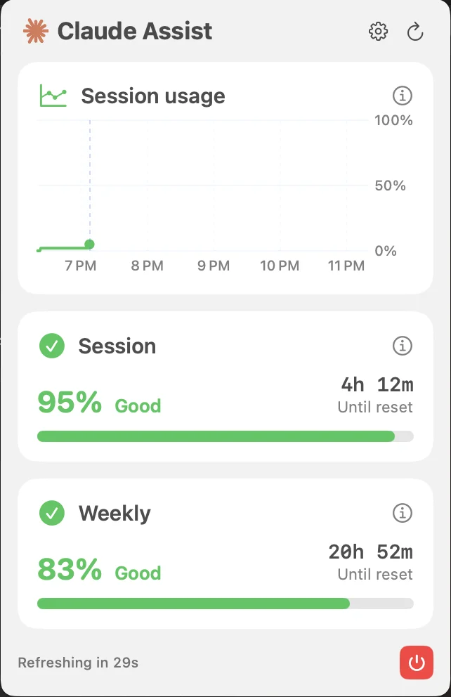

Live session graph
Watch your usage unfold across the current session window. Spot heavy stretches and plan long tasks before you hit the wall.
Claude Assist lives quietly in your menu bar and shows exactly how much session and weekly usage you have left — with reset countdowns and a live usage graph. No more guessing, no more surprise limits mid-flow.
Designed to stay out of your way until the moment you need it — then tell you everything in one glance.
Watch your usage unfold across the current session window. Spot heavy stretches and plan long tasks before you hit the wall.
A tiny color-coded indicator in your menu bar shows your headroom without even opening the app.
Both of your Claude usage windows, side by side, with clear percentages and status labels.
Know exactly when your limits refresh — down to the minute — so you can time your next deep-work session.
Auto-refreshes in the background, or tap refresh for an instant update whenever you like.
A true macOS menu bar app. No Dock icon, no windows to manage, no clutter — just a click away when you need it, and invisible when you don't.
Grab the free app with the button below — no sign-up forms, no trials.
Open the download and move Claude Assist into your Applications folder.
Launch it once. From then on, your usage is always one click away at the top of your screen.


Yes. Claude Assist is completely free to download and use — no subscriptions, no in-app purchases.
Your current Claude session usage and weekly usage as percentages, a status label for each, countdowns until each limit resets, and a graph of your usage across the current session.
It refreshes automatically on a short interval — you can see the countdown at the bottom of the popover — and you can hit the refresh button at any time for an instant update.
No. It runs only in the menu bar, with no Dock icon or windows. Quit it any time from the power button in the popover.
Claude Assist is built for modern versions of macOS. Check the download page for the latest system requirements.
Download Claude Assist for free and keep your Claude usage in view, all day.
Download for Mac — Free macOS menu bar app · Free forever